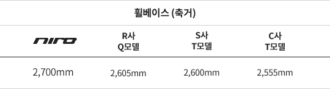

Q. 니로를 선택한 결정적 요인은 무엇이었나요?
기아차 니로를 결정하기까지 많은 유혹이 있었습니다. 여러 차량의 유혹에도 불구하고 니로를 선택하게 된 이유는 여러 가지가 있는데 그에 대한 저의 생각을 한번 적어보려고 합니다!
첫째, 공식 연비(19.5km/l)를 뛰어넘는 실연비입니다.
제 니로는 프레스티지 등급 18인치 휠을 장착하여 운행 중이며, 출퇴근시 고속화도로 70%, 일반국도 30% 정도의 비율로 왕복 50km 운행하고 있습니다. 연비에 신경쓰지 않고 운전해도 평균20km/L 이상은 나온답니다. 처음 2,000km는 길들이기를 한다고 속도를 80km 이내로 주행했는데 그때에도 연비가 25km/L도 넘게 나왔습니다. 물론 날씨의 영향도 있고 사람마다 조건은 다르겠지만 평균적으로 공인연비 이상은 무난하게 나올 것 같습니다.
둘째, 넉넉한 적재공간으로 가족과 일 두 마리 토끼를 잡다.
지인들이 묻습니다. “SUV 못 타봤어?” 저는 이렇게 답합니다. “그래 난 SUV가 처음이야!! 나에게 SUV는 로망이었어!!” 평소 레저나 캠핑을 특별히 추구하지 않는지라 SUV는 저에겐 로망이었을 뿐 현실적으로 차를 구입할 때 고려대상은 아니었습니다.
하지만 아이가 생기고 유모차를 싣고, 유아용 카시트를 장착해야 하며, 작은 아기 한 명이 어마어마한 짐을 동반한다는 것을 알아버렸을 때 저에게 SUV는 더이상 로망이 아닌 드림카로 다가왔습니다. 또한 여성의류 사업을 하고 있는 저는 대봉(의류업계에서 사용하는 큰 봉투를 말함)이 트렁크에 4개 이상 적재되며, 2열 좌석 폴딩시 10개 이상이 적재되어 너무 편하게 일하고 있습니다.
일반 승용차는 트렁크 높이 때문에 눕혀서 적재해야 해 많은 양을 적재하기가 어려운데 니로는 겉모습과는 다르게 SUV로서 상상이상의 적재공간을 갖고있답니다.
셋째, 우수한 승차감과 동급 대비 뛰어난 옵션
SUV로 차를 바꾸자!! 하지만 저에겐 고민이 있었습니다. 지인들의 SUV 차에 대한 기억을 되짚어 보아도 아이와 SUV가 생각보다 잘 어울리지 않았거든요. 덜덜거리는 진동과, 타고 내릴 때 디젤차 특유의 매연냄새는 또 어쩌구요. 그래!! 난 가솔린으로 선택해야겠어!! 디젤게이트도 저의 마음 한구석에서 부정적인 작용을 했을지도 모르겠습니다. 그렇게 저만의 공식을 대입해가며 좁혀가던 중 발견한 기아차 니로!!! 기아차 니로는 동급 소형 SUV 대비 가격이면 가격, 연비면 연비, 옵션이면 옵션 정말 빠지는게 없는 차인 것 같습니다. 눈에 보이는 가격은 니로가 더 비싸게 보이지만 따져보니 취득세 감면(140만원), 공채매입 감면(서울시 기준 최대 200만원), 구매보조금(100만원)등을 계산해보니 오히려 더 저렴하네요.
동급대비 다채로운 편의장비도 특유의 장점입니다. 거의 최상위 트림에 들어있던 장비들이 중간등급에도 많이 적용되었지요.
중간등급인 프레스티지 등급에서도 통풍시트와 2열 송풍구, LED 리어램프, 크루즈 컨트롤, 버튼 시동키, 스마트키 등등… 특히, 통풍시트와 2열 송풍구는 정말 HIT네요~ 여름철에 땀이 많이 차서 에어컨으로는 만족하지 못했던 저 같은 ‘땀맨’한테는 딱입니다. 2열 송풍구는 아이가 있는 집이라면 필수입니다. 아이들은 성인들보다 체온도 높을 뿐더러 엄마와 붙어있을 때에는 더욱더 열이 높아지거든요.(엄마들은 완전 공감하실 듯) 그리고 기아 니로는 승차감이 상당히 소프트하게 느껴졌습니다. 덜덜거리던 디젤 대신 가솔린과 전기모터를 품었고 동급 소형 SUV 대비 휠베이스(2,700mm)가 넓은 것이 그 이유겠지요
* 위 정보는 각 제조업체의 카다로그 및 홈페이지에 공개된 자료를 바탕으로 작성하였습니다.
저만 느끼는 게 아니라 뒷자리에 타는 아내 역시 장거리 운행에도 전혀 불편함이 없었다고 합니다. (저는 처가가 강원도 삼척 산골이라서 집(서울)에서부터 편도 300km를 명절마다 왕복하곤 합니다.) 친정 가는 길이 힘들지 않다는 걸 아내가 느꼈다는 사실은 무얼 의미할까요? 그 동안 장인, 장모님을 자주 찾아 뵙지 못했었는데 이제는 자주 찾아뵈어야 될 것 같은 불안감이 엄습합니다. 물론, 처가가 불편하고 막 그런건 아닙니다. 오해 없으시길…
Q. 실제 타면서 알게 된 니로만의 매력은 무엇인가요?
넷째, 안정적인 컨트롤
차를 바꾼 뒤 삼척에 있는 처가를 3일 전에 다녀왔습니다. 그동안 길들이기로 봉인되었던 저의 스피드에 대한 욕망이 스물스물 끌어 올라왔습니다. 그래 잘 되는지 확인만 해보자!!!
이렇게 저 자신을 합리화하며 테스트에 들어갔습니다. 자~ 니로 카페에서 검색해왔던 스포츠 모드를 해볼까나? 변경하자마자 반응이 옵니다. 엔진소리는 살짝 거칠어지고, 핸들은 묵직해집니다.
솔직히 에코
모드로 주행했을 때 초반 스타트와 언덕에서는 살짝 아쉬운
가속감이었습니다. 스포츠 모드는 1,600cc 맞나 싶을 정도로 경쾌하게 치고 나가네요. 기대 이상입니다. 핸들링,
코너링도 제 생각보다는 훨씬 높게 평가됩니다.
SUV는 코너링이 안 좋을 것 같다는 저의 편견을 니로가 단번에 없애주네요. 봉인해제 후 더욱더 만족감이 커진 니로. 하지만 안전운전해야겠죠?
다섯째, 니로야 멈추어다오!!
흔히들 화장을 하는 것보다 지우는 것이 중요하다고 하죠~ 차 역시 달리는 것보다 잘 멈춰서는 것이 중요합니다. 특히 저는 달리는 것만큼 혹은 그 이상으로 자동차의 브레이킹을 중요하게 생각합니다. 처가에서 서울 집으로 출발한 뒤 5분도 되지 않아 풀브레이킹을 밟을 수밖에 없었습니다. 뒷자리에 이제 7개월된 아이와 아내가 있음에도 말이죠. 이유인 즉, 제 차 앞에 멧돼지 7마리가 나타났지 뭐에요. 살면서 야생동물을 그렇게 많이 본 적도 처음이고, 위협적인 돌진도 처음 느껴봤습니다. 천만다행으로 저는 멧돼지와 1미터 간격을 남겨두고 멈춰섰습니다. 처음에는 아빠 멧돼지, 중간에는 새끼 멧돼지 5마리, 마지막으로 엄마 멧돼지... 정말 놀랐습니다. 차를 멈춰 세운 뒤 아이와 아내를 살폈는데 다행히도 아이도 카시트에 잘 타고 있었고, 아내도 다치지 않았습니다. 이번에 풀브레이킹을 해보니 2P, 4P브레이크랑 비교할 순 없지만 풀브레이킹 시에 잘 선다고 말씀드리고 싶습니다.
이상으로 제가 있었던 일들과 느낀점을 써보았는데 지루하진 않으셨는지 모르겠네요. 지금까지도 만족스럽고 앞으로도 실망시키지 않을 것만 같은 니로의 오너 시승기였습니다. 끝까지 읽어주셔서 감사합니다. 끝으로 한 말씀만… 골목길에서는 천천히 운전하세요~ 니로가 하이브리드카 이다 보니 너무 조용해서 골목길에서 가끔 깜짝 놀라는 사람들을 보게 된답니다~ 물론, 저도 놀라고요!